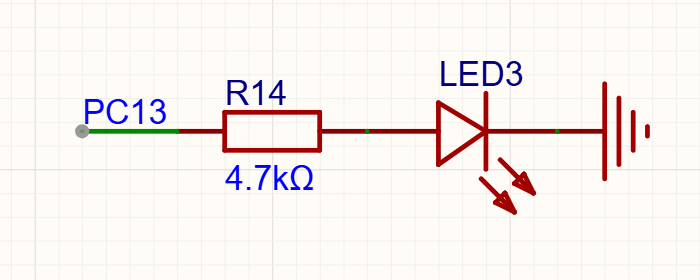

<!DOCTYPE lake>
<p data-lake-id="u29da7ac5" id="u29da7ac5"></p><p data-lake-id="u79e98391" id="u79e98391"><span data-lake-id="uf8efa40f" id="uf8efa40f">看着这盏灯，回答我，是高电平它亮还是低电平亮？ </span></p><p data-lake-id="u38feb70b" id="u38feb70b"><span data-lake-id="uc65c4f54" id="uc65c4f54">点灯要干啥？ 要让IO输出高电平<br/></span><span data-lake-id="u6cb3228a" id="u6cb3228a"> 1.  先初始化GPIO口</span></p><ol list="u64f8976b" start="2"><li data-lake-id="u4d871878" fid="u12444d4a" id="u4d871878"><span data-lake-id="ubeaee050" id="ubeaee050">再控制引脚输出高低电平。点灯就是这么简单</span></li></ol><span class="yuque-card-unsupported">[codeblock]</span><p data-lake-id="u7a0db738" id="u7a0db738"><span data-lake-id="u73e4b03d" id="u73e4b03d">常用IO口函数</span></p><span class="yuque-card-unsupported">[codeblock]</span><p data-lake-id="ube2f087f" id="ube2f087f"><span data-lake-id="u07a03e68" id="u07a03e68">也许，你在点灯的时候，想用延时函数呢？ 看下面这一行，直接掉就行。</span></p><span class="yuque-card-unsupported">[codeblock]</span>